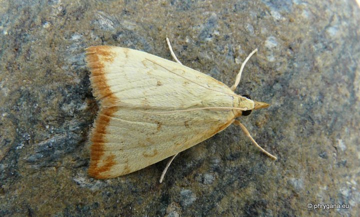
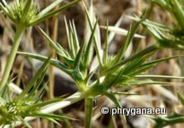
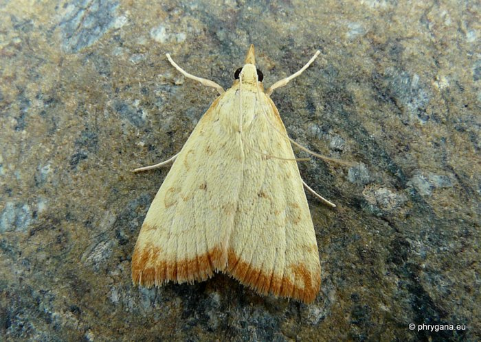
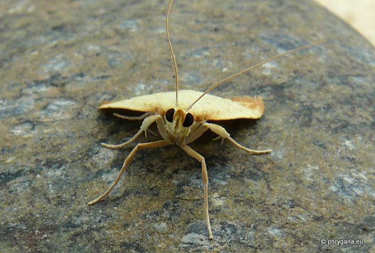
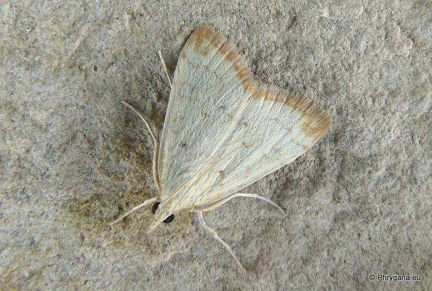
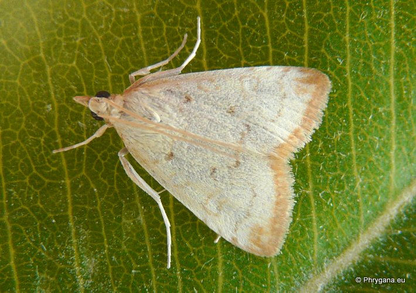

| PHRYGANA | Fauna | Flora | Galles | liste des espèces |
contact -
info - commentaires phrygana1 (at) gmail.com |
| Particularités crétoises | nouveautés | Mines | ressources naturelles |
| Udea institalis (Hubner 1819) |
| 355 | Fauna | CRAMBIDAE | Spilomelinae | Udea Guenee 1845 |
|
 Udea institalis Melambes (Agios Giorgos) 21 mai 2012 |
| Envergure: 20 - 24 mm | |
| Adulte: la couleur de fond est jaune sable, avec le bord brun rouille; lignes transversales peu marquées et de couleur brun rouille | |
| La chenille se développe sur des plantes herbacées, vivant d'abord dans une marge enroulée, ensuite dans un abri fait de 2 feuilles attachées avec de la soie. La pupation a lieu dans un cocon fait avec un morceau découpé dans une feuille et plié et consolidé avec de la soie. | |
| La chenille est oligophage (Apiaceae dont Eryngium campestre L.) | |
| Espèce univoltine? | |
| Période de vol: mai juin juillet | |
| Statut en Crète: indigène | |
| Biotopes en Crète: phrygana, olivaies, jardins, terrains vagues | |
| Distribution: région Méditerranéenne, Asie mineure, Sud de la Russie | |
| Note: vole dès le crépuscule, vient à la lumière. | |
| Larve oligophage: diverses Apiaceae dont: | ||
|  | ||
| Eryngium campestre | ||
|
 Udea institalis Melambes (Agios Giorgos) 21 mai 2012 |
|
 Udea institalis Melambes (Agios Giorgos) 21 mai 2012 |
|
 Udea institalis Melambes (Agios Giorgos) 27 mai 2013 |
|
 Udea institalis Melambes (Agios Giorgos) 27 mai 2013 |
| 10 juillet 2013 |
| © paul fontaine -- © Phrygana.eu 2007 -- 2013 |